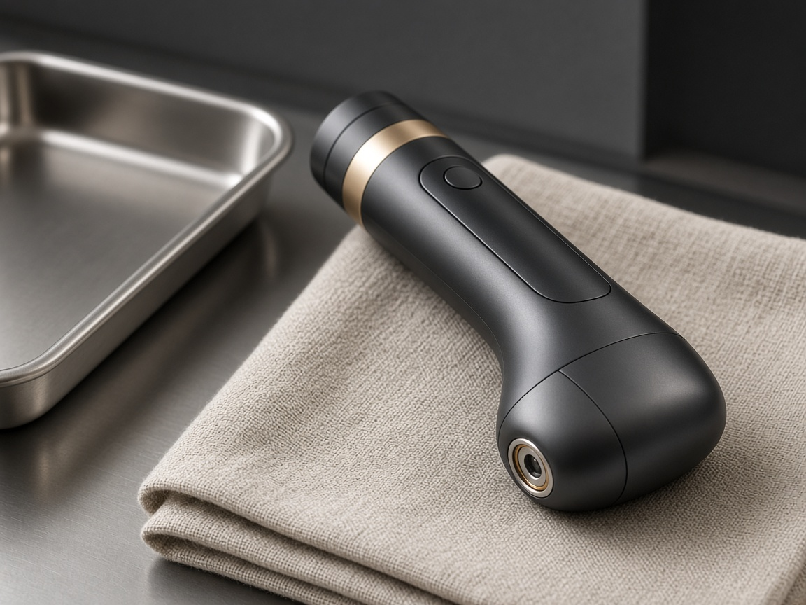

Medicina estética
Toxina botulínica, ácido hialurónico —con énfasis en labios— y bioestimulación de colágeno. La indicación se confirma en consulta.
Propuesta web · Dra. Stefania Arias Saa
Versión básica
Quito · Galápagos
La Dra. Stefania Arias Saa es médica cirujana y la primera médica MILESMAN en Ecuador. Atiende medicina estética entre Quito y Galápagos. El plan sale de una valoración, no de una tendencia.

Práctica
Toxina botulínica, ácido hialurónico —con énfasis en labios— y bioestimulación de colágeno. La indicación se confirma en consulta.
La caída del cabello se diagnostica antes de tratarla. El protocolo publicado es de restablecimiento capilar.
Láser diodo, luz pulsada y plasma. Es la primera médica MILESMAN en Ecuador. Los parámetros se ajustan al fototipo.
Medicina integrativa y healthy aging: prevención y longevidad con el mismo criterio de evidencia. El detalle de cada protocolo de wellness no está publicado.
Enfoque
Se graduó de médico cirujano en la Pontificia Universidad Católica del Ecuador. El máster internacional en medicina estética se obtuvo en España y se apostilló en Barcelona en mayo de 2022. Antes trabajó en emergencia, en consulta externa del Ministerio de Salud Pública y en medicina ocupacional.
Antecedentes, medicación, expectativas y anatomía. A veces el plan es esperar.
La toxina modula la expresión. En labios, la proporción manda sobre el volumen.
Consulta en Quito y, según calendario del año, en Galápagos.
El costo depende del plan. No hay precios en esta propuesta porque ella tampoco los publica antes de valorar.
La visita
Cuentas el motivo. La agenda del mes se confirma ahí: no hay un horario fijo publicado.
La primera cita no obliga a un procedimiento. Sirve para ver qué corresponde y qué no.
Si avanzan, el plan incluye el costo. Si no, también es un resultado de la consulta.
No hay reseñas ni fotos de pacientes en esta propuesta. Los casos reales solo se publican con autorización.
Contacto
Este formulario queda en la demostración: no envía el mensaje. Para una cita real, usa WhatsApp.
Demostración
En el sitio publicado, este texto llegaría al consultorio. Para escribir hoy: WhatsApp 098 405 5085.
© 2026 Dra. Stefania Arias Saa · Propuesta de sitio web · La información no reemplaza una valoración presencial.
Medicina estética · primera médica MILESMAN en Ecuador
La Dra. Stefania Arias Saa reúne estética, tricología, tecnología y medicina integrativa. La agenda se mueve entre Quito y Galápagos.


La casa
Médico cirujano por la PUCE. El paso a la estética llegó después de emergencia, consulta externa del Ministerio de Salud Pública y medicina ocupacional. Esa secuencia es el tono de la visita: primero entender, después indicar.
Imagen de la propuesta. No es una fotografía del consultorio en Juan Galíndez.
Arquitectura del sitio
Cada nombre corresponde a un área real de la consulta. En esta demo el inicio está desarrollado; el interior de cada módulo queda solo enunciado.
Firma
En su práctica pública, el ácido hialurónico de labios sigue una técnica propia, pensada para el tercio inferior y el borde del bermellón. En tecnología, la depilación con láser diodo se presenta como un acto médico: fototipo, contraindicaciones y parámetros, no una sesión genérica.

Imagen de la propuesta. No es el equipo del consultorio ni una pieza MILESMAN identificada.
Dónde atiende
Consultorio en Juan Galíndez OE3B y 10 de Agosto, Quito. Galápagos entra en el calendario del año; la dirección de esa sede no está publicada. El horario de cada mes se confirma al escribir.
Siguiente paso
098 405 5085 por WhatsApp. Consultorio 02 331 7566. Correo stefaniaariassaa@gmail.com.
Módulo
Toxina botulínica (Xeomin), ácido hialurónico en labios, Ellansé, Radiesse, PBSerum y Jalupro. Todo se indica después de la valoración.
Módulo nombrado según su práctica publicada. La vista interior no está desarrollada en esta demo.
Módulo
Restablecimiento capilar. La caída se distingue —androgenética, efluvio, tiroides o déficit— antes de elegir un tratamiento. En su información pública figura el protocolo Pilopeptan.
Módulo nombrado según su práctica publicada. La vista interior no está desarrollada en esta demo.
Módulo
Primera médica MILESMAN en Ecuador. Láser diodo para depilación médica, luz pulsada intensa y plasma pen para retracción y lesiones benignas superficiales.
Módulo nombrado según su práctica publicada. La vista interior no está desarrollada en esta demo.
Módulo
Medicina integrativa y healthy aging: prevención y longevidad con evidencia. No hay un listado público de protocolos de esta área, así que aquí no se inventa uno.
Módulo nombrado según su práctica publicada. La vista interior no está desarrollada en esta demo.
Módulo
Quito, Juan Galíndez OE3B y 10 de Agosto. Galápagos entra por calendario anual; la dirección de la isla no está publicada. No hay horarios fijos en sus canales: la cita se cierra por WhatsApp.
Módulo nombrado. No hay un calendario simulado: el enlace de WhatsApp es el canal real.